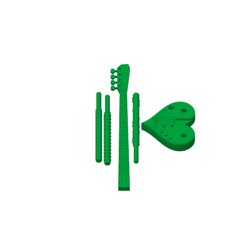

2026-2학기 한성 AX 융합튜터링 · 팀 AAA
10.16 – 11.18 · 다섯 번
← → 로 넘기기
10.16 21분
브라우저 레이싱 게임
파일 하나, 설치 없음
10.30 4시간
웹 3D FPS · 최대 5명
PC와 폰이 같은 방에서
11.06 3시간
친구의 project_fps와 비교해
좋은 쪽을 가져왔습니다
11.11 빼빼로데이
마우스 없이 말로 모델링하고
학교 3D 프린터로 출력

11.18 58분
폰 텔레그램으로 부르는
내 맥의 AI 비서
돌아보며
한 단계가 돌아가면 다음 단계
Blender · GitHub · 텔레그램
스크립트 확인, 권한은 좁게